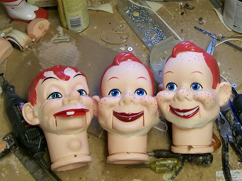

Getting into shape
1/4/2010
It's a little hard to see from this photo, but all three of these Goldberger heads have masking tape taped under their chins, running cheek to cheek. Some dolls arrive from the manufacturer with the cheeks out of line with the mouth. I suspect this is caused by too much tension on the rubber band as it is installed. While the dolls likely look great when they are first packed in China, the newly molded heads are slightly flexible and the tension of the rubber band pulls and distorts the head during the long boat ride across the ocean to the USA. So once a doll with this problem arrives at my shop I have learned to reverse the process by first heating the misshapen head to soften it again, then using my hand to reshape the head as it was originally intended, tape the head to hold it in shape, and then letting the head slowly cool and rest for several days with the masking tape in place. After a few days have passed, I remove the tape and the head will retain the proper original shape. Problem solved.
{kind=link}
